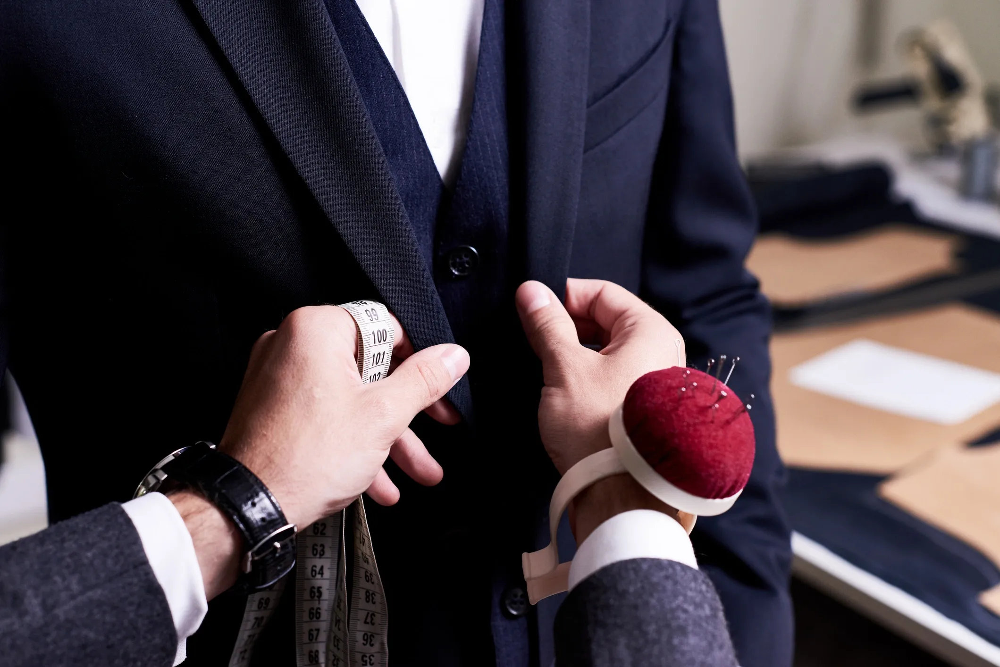

두손컴퍼니 Doosohn Company
장애인 고용을 사업 모델로 한 풀필먼트 소셜벤처
최종 업데이트

두손컴퍼니는 어떤 브랜드인가
두손컴퍼니는 2014년 장애인 등 고용 취약계층에게 안정적인 일자리를 제공하겠다는 목표로 설립됐다. 창업자는 물류·이커머스 풀필먼트 업무가 반복적이고 구조화된 작업으로 이루어져 있다는 점에 착안해, 이를 장애인 고용에 적합한 업무로 재설계했다.
이커머스 기업들의 물류 대행 수요와 장애인 고용 확대라는 두 목표를 동시에 충족하는 사업 모델을 구축했다. 이후 소셜벤처로서 다수의 파트너 기업과 협업을 확대했다.
두손컴퍼니의 브랜드 아이덴티티는 무엇인가
복지적 접근이 아니라 실제 비즈니스 서비스(풀필먼트 대행)의 품질로 경쟁력을 확보함으로써 장애인 고용의 지속가능성을 높인 사례다. 물류 서비스의 품질 경쟁력을 유지하면서 장애인 고용 규모를 함께 확대하는 방식으로 성장했다.
두손컴퍼니 연혁 — 주요 사건은 언제였나
두손컴퍼니 로고는 어떻게 변해왔나
자주 묻는 질문
두손컴퍼니의 브랜드 아이덴티티는 무엇인가요?
복지적 접근이 아니라 실제 비즈니스 서비스(풀필먼트 대행)의 품질로 경쟁력을 확보함으로써 장애인 고용의 지속가능성을 높인 사례다.
출처와 검증
브랜드명은 한글과 원어를 함께 표기하되 데이터에 없는 표기는 만들지 않습니다. 기원 국가·설립연도는 검수된 정의문에서 확인된 값을 우선하고, 없을 때만 공식 웹사이트 URL이 일치하는 위키데이터 개체의 값을 씁니다.